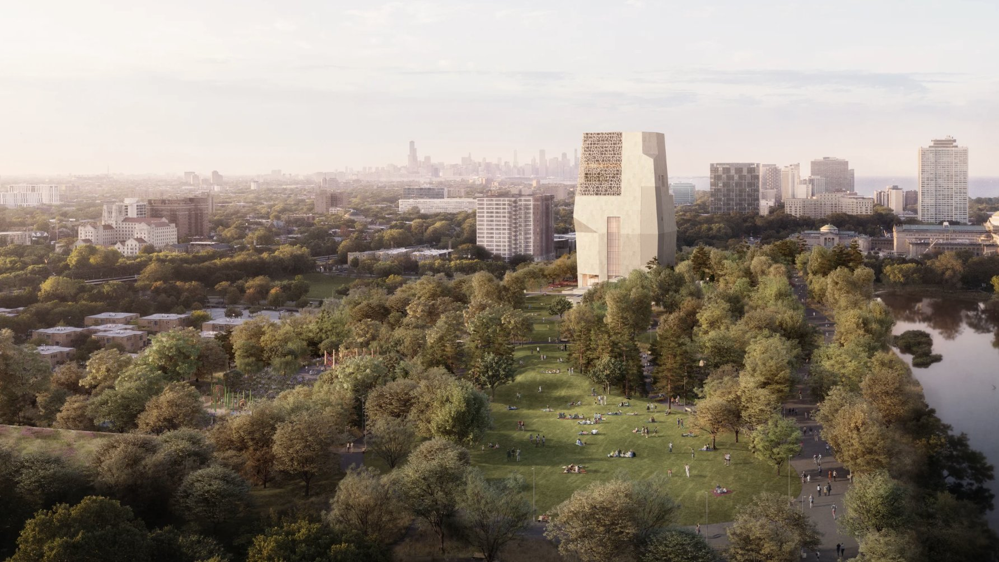
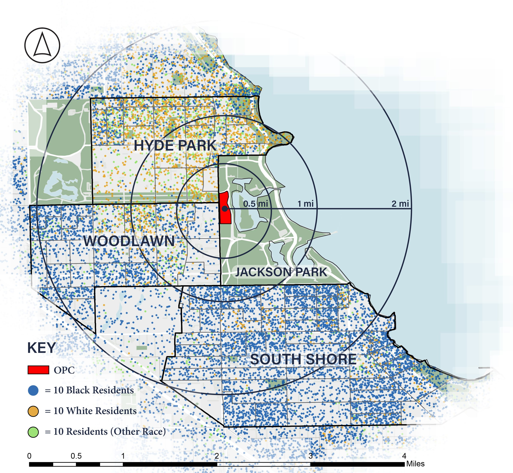
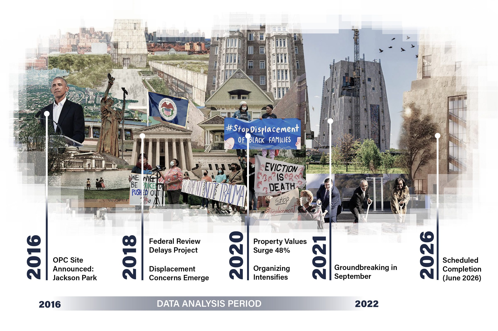
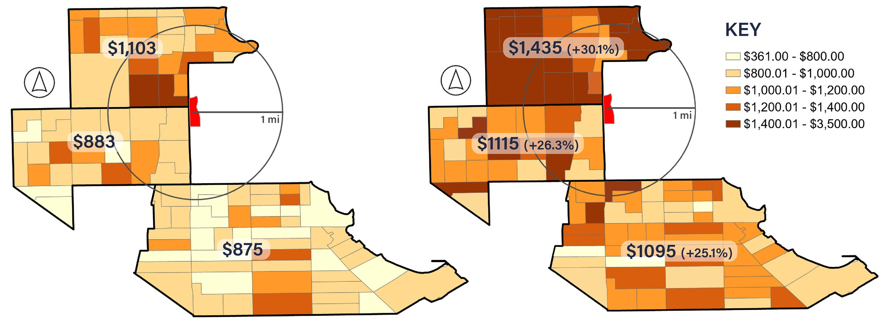
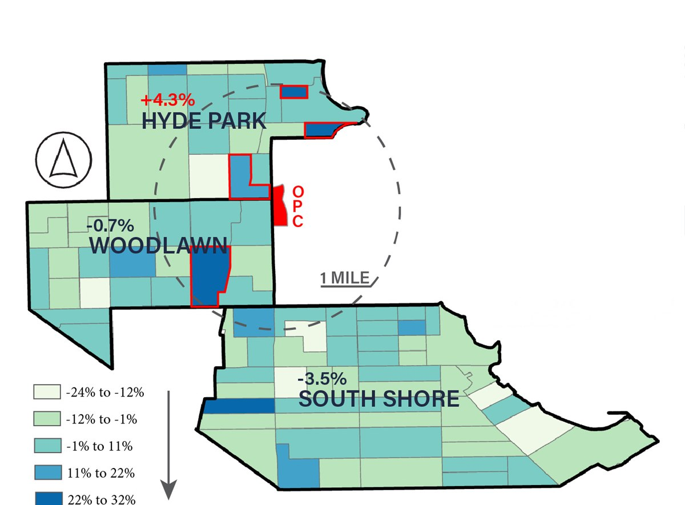
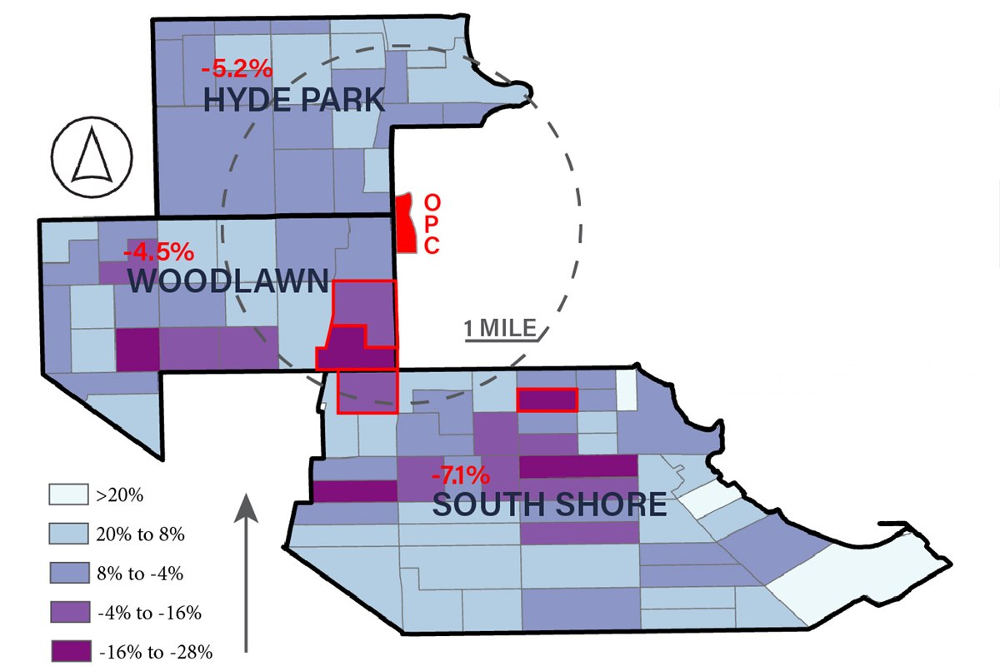
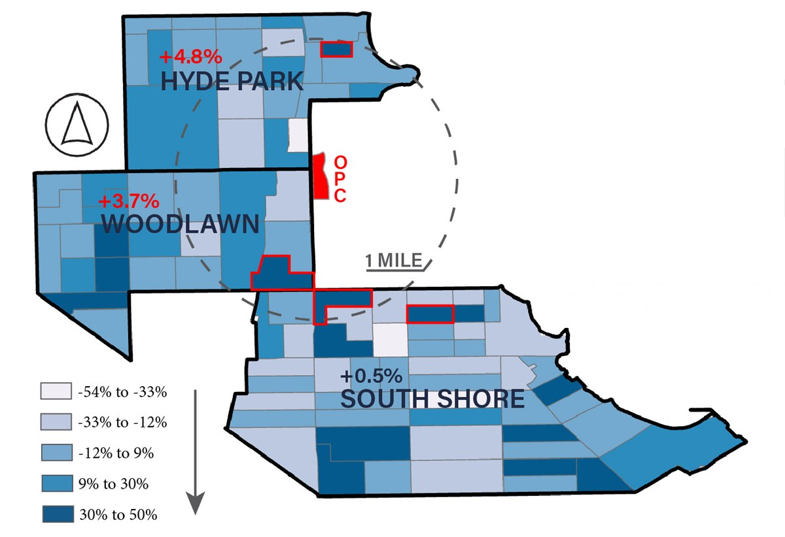
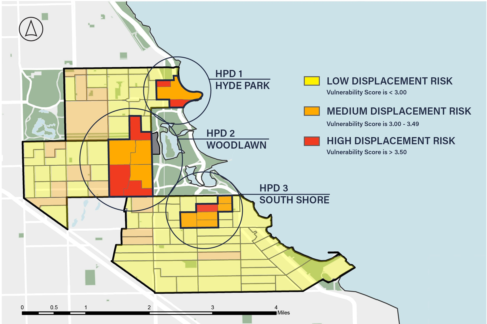

Multi-Criteria Decision Analysis for the Obama Presidential Center
Access Full Paper ->Hyde Park, Woodlawn, and South Shore form a district facing transformation. The arrival of the Obama Presidential Center in Jackson Park brings investment and opportunity for Chicago’s South Side, but also displacement risk for renters. In addition to community concerns, gross median rents near the OPC increased 28% from 2016 to 2022, outpacing citywide growth. This GIS analysis maps housing vulnerability across the three neighborhoods to identify which block groups most urgently need anti-displacement policies.
Using Census data and multi-criteria decision analysis, a composite vulnerability index was developed. This index incorporated proximity to the OPC the change in vacancy rates, turnover rates, amount of burdened and severely burdened renters, and distance to the OPC. Six census block groups scored above 3.5 on the 5-point scale, indicating high displacement risk. These clusters concentrate in northern Woodlawn and eastern Hyde Park.
From the analysis, three Housing Preservation Districts (HPDs) with tiered protection frameworks have been proposed to preserve affordability. Base-tier protections include displacement monitoring and legal counseling, while enhanced-tier zones trigger Community Land Trust acquisition priority, rent stabilization, and tenant right of first refusal on sales. This methodology offers a replicable framework for district-scale housing vulnerability assessments.
Framing OPC Displacement


Gross Median Rent
Gross Median Rent in 2016
Gross Median Rent in 2022

Median rent around the OPC increased by $248 from 2016 to 2022. This is 22% more than the City of Chicago, which had median rent increase by $216 over the same period. The Obama Center could accelerate this pattern.
- Avg rent in study area
- $893 to $1,141 (+27.8%)
- Avg rent in City of Chicago
- $970 to $1,186 (+22.6%)
Resident Quotes
“The owner told me he’d be charging 1,500, and that once the Obama Center was completed there’d be people who could afford the rent.”
“I’m a working mother who can’t afford to live in my own community that I’ve lived in for 42 years. It’s the same story with so many people in this community.”
“We’re fighting to cancel rent, fighting to stop evictions and stop rent increases, and we want to fundamentally stop gentrification.”
“When you got people’s rent going from $850 to $1,300, you’re telling people you don’t want them in your neighborhood.”
Methodology
![Methodology flow chart. Cook County ACS housing data (5-year estimates, 2016 and 2022, n=94) is clipped to Hyde Park, Woodlawn and South Shore. Five factors are each rated per block group, the change calculated, and reclassified into five levels of threat severity: turnover (20% weight), vacancy (15%), distance to the OPC (10%), burdened renters paying 30–49% of income (25%), and severely burdened renters paying 50% or more (30%). The weighted scores are mapped from 1 to 5, and one Housing Preservation District is proposed per neighborhood for block groups scoring above 3.49.](../../assets/mcda/method.jpg)
Change by Block Group

Change in Turnover Rate by Block Group
2016–2022
- 37% increaseBlock Group 1 / 4109
0.93mi from OPC - 30% increaseBlock Group 1 / 4110
0.68mi from OPC - 21% increaseBlock Group 2 / 4111
0.22mi from OPC - 28% increaseBlock Group 2 / 8344
0.61mi from OPC
Takeaway
Hyde Park saw the highest rate of resident displacement and replacement, but U Chicago grad housing could be contributing to this higher turnover rate.

Change in Vacancy Rate by Block Group
2016–2022
- 18% decreaseBlock Group 1 / 8439
0.40mi from OPC - 34% decreaseBlock Group 2 / 8439
0.65mi from OPC - 27% decreaseBlock Group 1 / 4303
0.92mi from OPC - 29% decreaseBlock Group 3 / 4303
1.10mi from OPC
Takeaway
While all neighborhoods experienced a vacancy decrease, Eastern Woodlawn and Northern South Shore saw the greatest surges in housing demand.

Change in Rate of Rent-Burdened Renters*
2016–2022
- 22% increaseBlock Group 1 / 4109
0.93mi from OPC - 25% increaseBlock Group 2 / 8439
0.65mi from OPC - 35% increaseBlock Group 5 / 4302
0.80mi from OPC - 48% increaseBlock Group 3 / 4301
1mi from OPC
Takeaway
Despite South Shore’s lower increase in rent-burdened renters, the variance in rate changes per block group points to housing instability.
*30-49% of income spent on rent
New Housing Preservation Districts

Displacement Protection Framework
Base Tier (Vulnerability 3.0 - 3.49)
- Annual displacement monitoring
- Free legal counseling in evictions
- Notice of tenant rights at lease signing
- Annual vulnerability index updating
Enhanced Tier (Vulnerability 3.5+)
- All base protections, PLUS:
- Community Land Trust acquisition priority
- Rent stabilization for existing tenants
- Tenant right of first refusal on sales
HPD 1: Hyde Park
- 3 block groups
- 4,126 residents
- 1,356 rental units
- 22% Black, 61% White
Mean vulnerability score 3.6
HPD 2: Woodlawn
- 6 block groups
- 7,640 residents
- 2,428 rental units
- 64% Black, 21% White
Mean vulnerability score 3.7
HPD 3: South Shore
- 6 block groups
- 4,943 residents
- 1,907 rental units
- 91% Black, 6% White
Mean vulnerability score 3.3